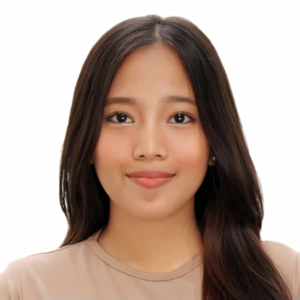

Email: klanting@ccc.edu.ph | Contact: 0991-704-0526
Hi! I'm Kristine Mae Lanting feel free to call me Tine or Kris. I'm an IT student (going slightly crazy from all the coding, haha!) and I'm soft hearted, kind and cute!
Humanities and Social Sciences Strand (HUMSS) | A.Y. 2022 - 2024
City College of Calamba - Bachelor of Science in Information Technology | A.Y. 2024 - Present
Leadership
Work